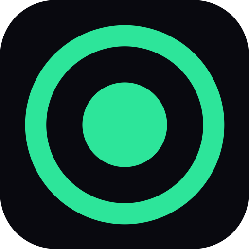
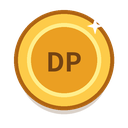
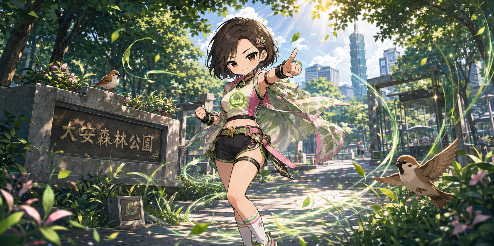
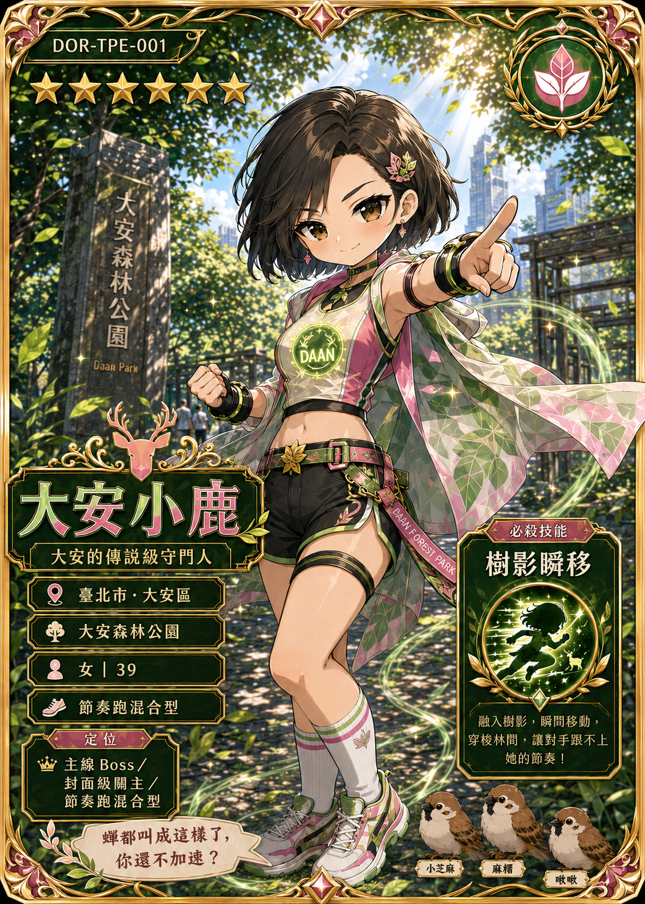
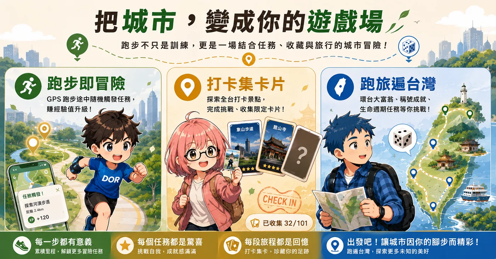
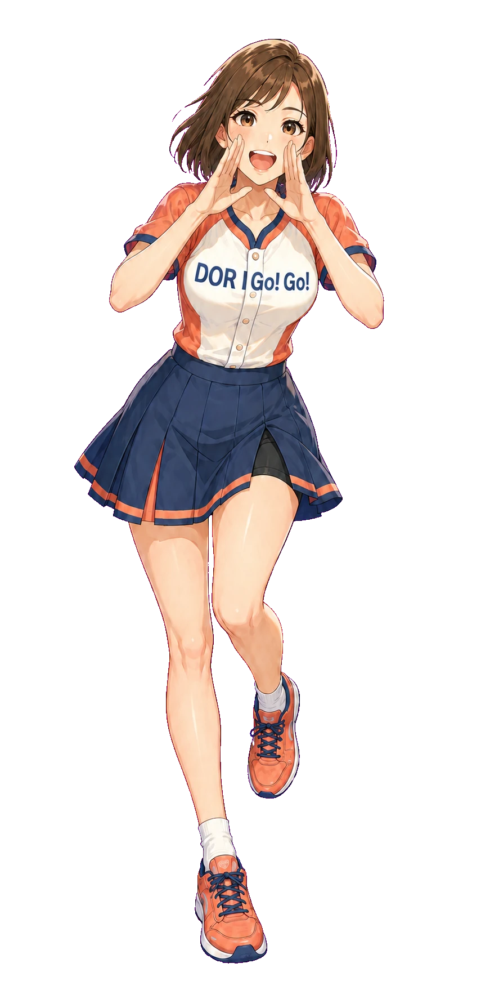

每天經過的街角，
都藏著你還沒發現的
冒險
。

・
城市探索
把
城市
，變成你的
遊戲場
跑步即冒險
打卡集卡片
跑旅遍台灣
✓
★
?
?
?
?
?
?
未探索
已揭曉
已收服
STEP 01
發現
城市裡，
藏著
神秘打卡點
個打卡點
遍布全台
公園、老街、宮廟、河濱、車站……
出門跑一趟，就是一場尋寶。
🗺️ 城市探索・GPS 地圖
大安森林公園 附近
?
★
打卡成功！關主揭曉
📍 在範圍內・立即打卡

+3 DP
+2 GP
STEP 02
打卡揭曉
走進範圍，一鍵打卡
不必邊跑邊按——GPS 確認抵達，就能揭曉場景與關主，
每次打卡都能隨機獲得
DP
與
GP
。
?

大安森林公園
★★★★★ 關主據點
CHECK IN!

STEP 03
挑戰關主
大安森林公園的在地關主現身！
大安小鹿
— 大安的傳說級守門人 —
★★★★★
節奏跑混合型
絕技・樹影瞬移
「
蟬都叫成這樣了，你還不加速？
」
★
★
★
挑戰拿下 3★，即可收服
收服成功！限定卡片入手
全台
572
位在地關主，等你來叫陣
一路跑，一路
收藏整座台灣
每一段旅程，都變成圖鑑裡的一張卡
信義・台北 101
✓ 已打卡
淡水河口
✓ 已打卡
西門町
✓ 已打卡
福和橋
✓ 已打卡
臺北田徑場
✓ 已打卡
劍南山
✓ 已打卡
🌳 綠地公園
🏮 宮廟文化
🎨 藝文
🚉 鐵道
🌊 水岸
🏯 歷史

每一步都有意義・每段旅程都是回憶

・
城市探索
出發吧！讓城市因你的
腳步
而精彩
打開手機，登入會員，你的第一個打卡點就在附近
www.dor.tw